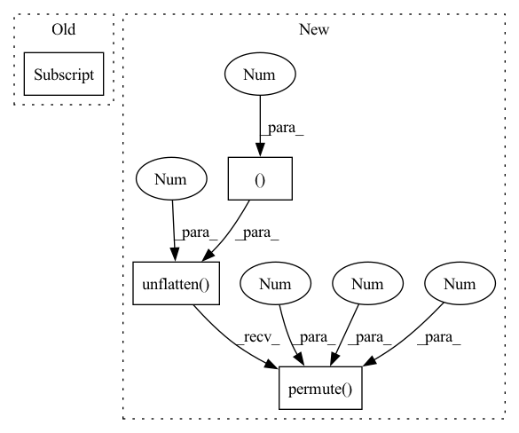

Pattern ID :41226

Before Change
df_coefs, df_alpha = self.df_dec(feat_spec, emb)
spec = self.df_op(spec, df_coefs, df_alpha)
else:
df_alpha = torch.zeros(spec.shape[0], spec.shape[2], 1, device=spec.device)
return spec, m, lsnr, df_alpha
After Change
// spec = self.df_op(spec, df_coefs, df_alpha)
// ic(df_coefs.shape, spec.shape)
df_coefs, _, _ = self.df_stage(feat_spec)
df_coefs = df_coefs.unflatten(1, (self.df_order, 2)).permute(0, 3, 1, 4, 2)
spec = self.df_op(spec, df_coefs, df_alpha)
return spec, m, lsnr, df_alpha
In pattern: SUPERPATTERN
Frequency: 3
Non-data size: 4
Instances
Fragment ID: 116228333
Project Name: rikorose/deepfilternet
Commit Name: 945221141385ce808c03235a16a5e66477f50923
Time: 2022-04-12
Author: h.schroeter@pm.me
File Name: DeepFilterNet/df/deepfilternet2.py
M Class Name: DfNet
N Class Name: DfNet
M Method Name: forward(5)
N Method Name: forward(5)
M Parent Class: nn.Module
N Parent Class: nn.Module
M File Name: DeepFilterNet/df/deepfilternet2.py
N File Name: DeepFilterNet/df/deepfilternet2.py
M Start Line: 320
M End Line: 332
N Start Line: 338
N End Line: 344
'>
Before Change
def forward(self, coefs: Tensor) -> Tensor:
// [B, T, F, O*2] -> [B, O, T, F, 2]
coefs = coefs.view(*coefs.shape[:-1], -1, 2)
coefs = coefs.permute(0, 3, 1, 2, 4)
return coefs
After Change
def forward(self, coefs: Tensor) -> Tensor:
// [B, T, F, O*2] -> [B, O, T, F, 2]
coefs = coefs.unflatten(-1, (-1, 2)).permute(0, 3, 1, 2, 4)
return coefs
class DfDecoder(nn.Module):
'>
Fragment ID: 116228345
Project Name: rikorose/deepfilternet
Commit Name: 3e554333e5a3f0802f8df5a00e07de517dfe6561
Time: 2022-10-18
Author: h.schroeter@pm.me
File Name: DeepFilterNet/df/deepfilternet2.py
M Class Name: DfOutputReshapeMF
N Class Name: DfOutputReshapeMF
M Method Name: forward(2)
N Method Name: forward(2)
M Parent Class: nn.Module
N Parent Class: nn.Module
M File Name: DeepFilterNet/df/deepfilternet2.py
N File Name: DeepFilterNet/df/deepfilternet2.py
M Start Line: 271
M End Line: 272
N Start Line: 289
N End Line: 289
'>
Before Change
x = self.enc0(x)
for i, enc_layer in enumerate(self.enc):
intermediate.append(x)
x, _ = enc_layer(x, h[i])
return x, intermediate, h
def decode(self, x: Tensor, intermediate: List[Tensor]) -> Tensor:
After Change
intermediate.append(x)
x = enc_layer(x)
x_gru, h = self.gru(x.permute(0, 2, 3, 1).flatten(2), h)
x_gru = self.gru_fc(x_gru).unflatten(2, (-1, self.inner_ch)).permute(0, 3, 1, 2)
x = self.gru_skip(x) + x_gru
return x, intermediate, h
def decode(self, x: Tensor, intermediate: List[Tensor]) -> Tensor:
'>
Fragment ID: 116228265
Project Name: rikorose/deepfilternet
Commit Name: a006640875e1cd0ecad680c379a29276a62a5452
Time: 2022-04-12
Author: h.schroeter@pm.me
File Name: DeepFilterNet/df/multistagenet.py
M Class Name: FreqStage
N Class Name: FreqStage
M Method Name: encode(3)
N Method Name: encode(3)
M Parent Class: nn.Module
N Parent Class: nn.Module
M File Name: DeepFilterNet/df/multistagenet.py
N File Name: DeepFilterNet/df/multistagenet.py
M Start Line: 392
M End Line: 397
N Start Line: 400
N End Line: 405